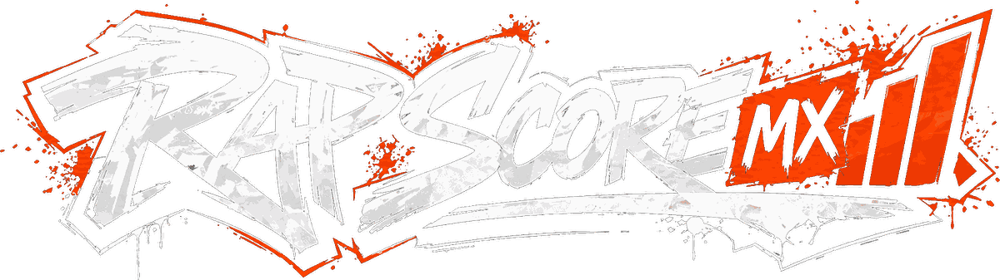
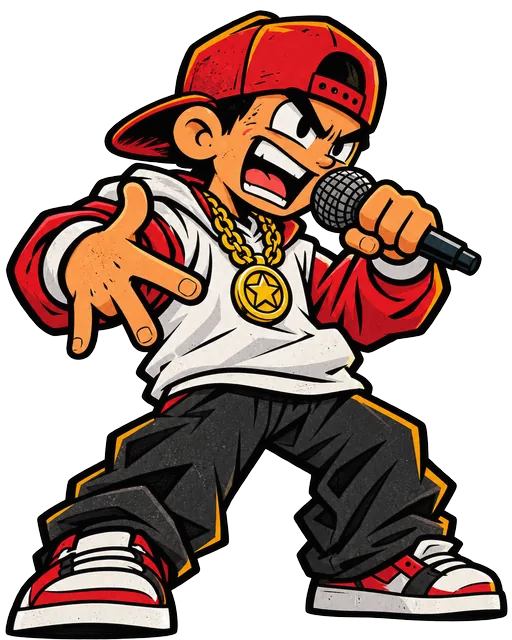
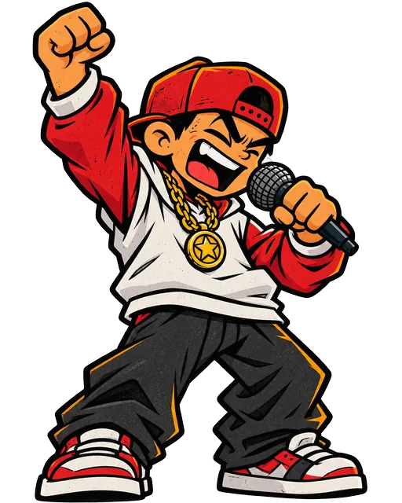
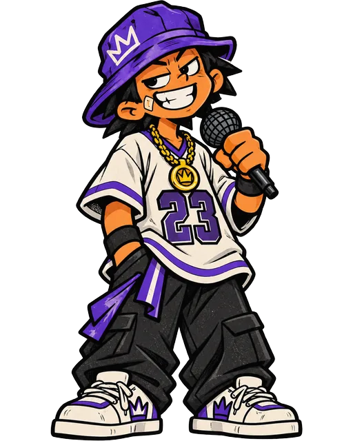
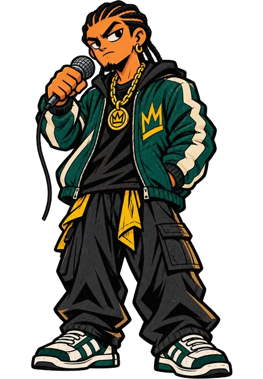
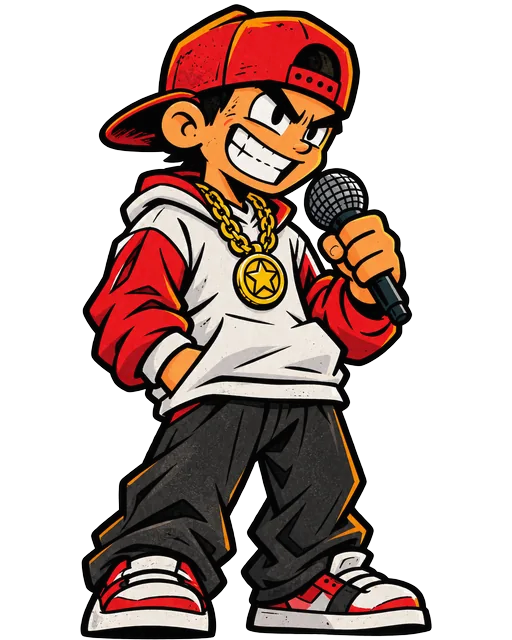

Completa el verso con la palabra que rima y tiene sentido, antes de que se acabe el beat.




Los de la casa son beats originales de RapScore MX. En los beats rápidos el tiempo se cuenta a medio tiempo.
